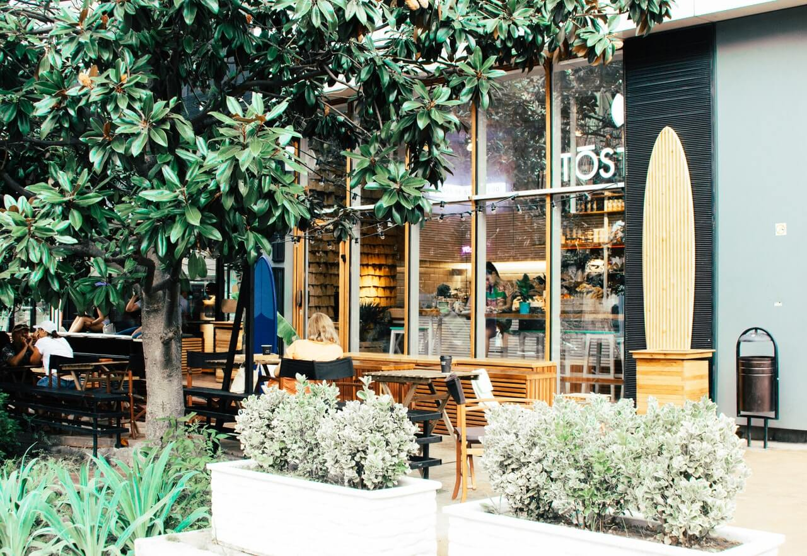

Här på Café Koppen älskar vi kaffe, det är en passion vi gärna delar med oss av till våra gäster.
Vi specialiserar oss på att importera de finaste och mest prisbelönta kaffebönorna från världens alla hörn.
Här är ett axplock av våra leverantörer, klicka på logotypen för att besöka deras hemsida: